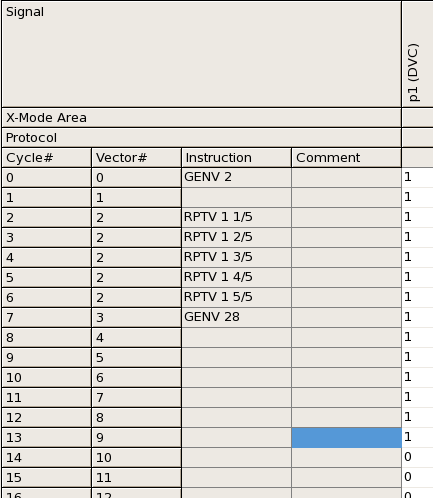

SEQUENCER_STATUS - (Sequencer)
The SEQUENCER_STATUS API accesses the data container holding the digital sequencer status. You can access the sequencers using the member functions. Note the following restrictions:
- You have to use the system-prepared class object Sequencer when using the member functions. You cannot create any class object of the SEQUENCER_STATUS API.
- The SEQUENCER_STATUS API does not affect the analog sequencers.
- The SEQUENCER_STATUS API does not support execution contexts (for
which see Using execution contexts). You can only start a global sequencer run (executing the
current start label) with the member function run(), and only abort globally
all active sequencer runs with the member function abort().
Note also that run() will start a global sequencer run only if no sequencer is already running (for example, in an endless loop). If there is, you must stop all the active runs with abort() before you can start the new one.
This API is defined in the header file /opt/hp93000/soc/prod_com/include/MAPI/SequencerStat.h.
Class definition
Member Functions
SEQUENCER_STATUS& stopCycle(int num); SEQUENCER_STATUS& stopCycle(int num, const STRING& portName); SEQUENCER_STATUS& stopVector(int num); SEQUENCER_STATUS& reset(); run(TM::RUN_STATUS status = TM::NORMAL); abort(); Boolean isRunning(); const STRING getSequencerStatus() const;
Syntax
For running the sequencers until the specified cycle
Sequencer.stopCycle(num).run(mode);
For running the sequencers until the specified vector
Sequencer.stopVector(num).run(mode);
For other operations of the sequencers
Sequencer.member_func;
num |
Tester cycle number or vector number |
mode |
Execution mode of the sequencers. You can also set the Sequencer.run(mode) |
member_func |
Member function of the |
Member functions
stopCycle()
SEQUENCER_STATUS& stopCycle(int num); SEQUENCER_STATUS& stopCycle(int num, const STRING& portName);
This member function specifies a tester cycle after which the sequencers will stop (the specified cycle is the last cycle that is executed, see Example section) in the global sequencer run subsequently started with run(). If the current start label is a multiport burst, you must also specify the port to which this cycle number refers.
The setting of
this function affects not only the run() member function but also the
EXECUTE_TEST, START_TEST,
FUNCTIONAL_TEST, DIGITAL_CAPTURE_TEST,
NB_DIGITAL_CAPTURE_START API, and pre-action of the DC APIs.
This function is provided to change the behavior of the sequencer execution temporarily. However the setting of this function is effective until all settings are reset by the reset() member function of this API. Therefore you should reset the setting by using the reset() member function at the end of the test suite or before starting the sequencer for the other test.
num |
Tester cycle number where the sequencer stops |
portName |
The port to which to apply the stop cycle. |
stopVector()
SEQUENCER_STATUS& stopVector(int num);After
the sequencer is started by the run member function or others, the stopVector()
member function specifies a vector number after which the sequencer stops (the specified vector
is the last vector in this execution, see Example section).
Notices for using this function are the same as the stopCycle member function.
num |
Vector number where the sequencer stops |
reset()
SEQUENCER_STATUS& reset();
This member function clears the setting of the stopCycle and stopVector member function. Use this member function to perform a standard functional test after using the stopCycle and stopVector member function, else the sequencer stops at the point specified with the stopCycle and stopVector member function.
Note that Sequencer.reset() will clear the settings done by stopCycle() and stopVector() but this will only take effect (that is, it will only be flushed, that is, downloaded) before the next sequencer run initiated through the test methods APIs listed above under the stopCycle() member function. If the reset is to take effect earlier, FLUSH must be called explicitly.
Note also that reset() does not affect the current sequencer status. If you want to stop the sequencers, you must call Sequencer.abort().
run()
run(TM::RUN_STATUS status = TM::NORMAL);
This
member function starts a global sequencer run. The sequencers pause after the tester cycle or
vector that is specified with the stopCycle or stopVector
member function. Note that the sequencers will only be started if no sequencer run is already
active. In this latter case you must stop all active runs with the abort()
member function before you can call run() successfully.
Note that the DPS128/DPS64, when starting the sequencer with the run() member function or with the SQST RUN firmware command, cannot execute dynamic and static DC actions in parallel. Use profiling for measurements in parallel to a dynamic pattern.
status |
Sequencer running mode. The following modes are available: TM::NORMAL (Default) The sequencer executes the pattern. TM::ENDLESS_LOOP The sequencer repeats the complete test, including primary activation and multiport synchronization, in an endless loop and can only be stopped by a break action. See also the EL mode in SQGB, SQGB? - (SeQuencer GloBal). TM::ENDLESS_PATTERN_LOOP The sequencer repeats only the user sequencer program defined in the pattern. This avoids critical holds during measurement for example, for IDD operating currents). In case of multiport testing, ports may run with different frequencies. Using the ELPT mode in this case, can lead to the situation, that for loop counts >1 the synchronization is no longer executed. See also the ELPT mode in SQGB, SQGB? - (SeQuencer GloBal) TM::STOPONERROR The sequencer stops when an error occurs in the execution. TM::STOPONERROR_LOOP The sequencer stops when an error occurs in an endless loop. |
abort()
abort();
This member function sets all
active sequencer runs into the break state. It can be used, for example, to stop an endless loop
started with Sequencer.run(TM::ENDLESS_PATTERN_LOOP), and must be called in
this situation before a new sequencer run can be started.
There are no parameters in this member function.
isRunning()
Boolean isRunning();
This member function returns whether the digital sequencers are running or not. You can also use the IS_TEST_RUNNING API that returns whether either the analog or digital sequencer is running.
There are no parameters in this member function.
getSequencerStatus()
const STRING getSequencerStatus() const;
This member function returns the current sequencer status. It can be OFF, RUN, HALT or BRK.
Examples
Example 1
Given the following pattern, the member functions
stopVector and stopCycle behave as follows.

Sequencer.stopCycle(13).run();The sequencer stops after executing cycle number 13 (p1 set to 1)
Sequencer.stopCycle(14).run();The sequencer stops after executing cycle number 14 (p1 set to 0)
Sequencer.stopVector(9).run();The sequencer stops after executing vector number 9 (p1 set to 1)
Sequencer.stopVector(10).run();The sequencer stops after executing vector number 10 (p1 set to 0)
Example 2
The following example will perform a DC measurement using FlexDC. First, it prepares the needed flex dc settings, then it starts the sequencer and pauses on tester cycle 15 to perform the DC measurement at pin "pin1".
virtual void run()
{
PPMU_SETTING setting1;
TASK_LIST tasks;
PPMU_RELAY relay_on, relay_off;
PPMU_MEASURE ppmu_meas;
PPMU_CLAMP clamp_on, clamp_off;
double VMeas_seq1;
ON_FIRST_INVOCATION_BEGIN();
setting1.pin("pin1").vForce(2.1 mV);
setting1.pin("pin1").iRange("10uA");
setting1.pin("pin1").min(0.1 uA).max(25.0 uA);
relay_on.pin("pin1").status("PPMU_ON");
relay_on.wait(1.3 ms);
relay_off.pin("pin1").status("AC_ON");
clamp_on.pin("pin1").status("CLAMP_ON").low(2.6 V).high(2.9 V);
clamp_off.pin("pin1").status("CLAMP_OFF");
ppmu_meas.pin("pin1"). execMode(TM::PVAL);
tasks.add(setting1).add(clamp_on).add(relay_on).add(clamp_off). add(ppmu_meas).add(relay_off);
Sequencer.stopCycle(15).run();
tasks.execute();
ON_FIRST_INVOCATION_END();
VMeas_seq1 = ppmu_meas.getValue("pin1");
Sequencer.reset();
return;
}Example 3
Sequencer.run(TM::ENDLESS_PATTERN_LOOP);
DPS_VFIM("@").execute();
Sequencer.abort();This example achieves an operating current test of the DPS with the test method. First, it starts the sequencer in an endless pattern loop. Then it performs a current measurement at a random device cycle. Then it aborts the sequencer.
Example 4
Sequencer.reset();
PMU_IFVM("@").preAction("FTST").execute();This example resets the sequencer before performing a functional test that is a pre-action of the DC test. However, It is recommended to use FLEX DC instead of PMU_IFVM and use SEQUENCER_STATUS APIs to execute a functional pattern as pre action if required as shown in above example 1.
Functional changes
- Introduced before SmarTest 6.3.2
- SmarTest 6.5.2: New parameter option TM::STOPONERROR and TM::STOPONERROR_LOOP for the member function run().
- SmarTest 6.5.2: New member function getSequencerStatus().
- SmarTest 6.5.2: New parameter portName for the member function stopCycle().
- SmarTest 6.5.4: New TM::ENDLESS_PATTERN_LOOPparameter option for the run() member function.